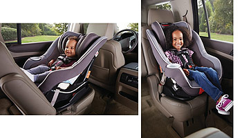

Foward-Facing Car Seats
Foward-Facing Car Seats
There are three types of foward-facing car seats:
- Convertible Car Seat: can be installed in a rear-facing or foward-facing position and encourages keeping a child in the rear-facing position a little longer since it tends to accomodate multiple stages.
- Combination Car Seat: can transition from a forward-facing seat, that includes a harness and tether into a booster eat.
- All-in-one Seat: accomondates rear-facing, foward-facing and booster-style stages. Booster-style seats are described on the Booster Seat page.
All car seats manual should be checked for the individual manufacturer's guidlines.
